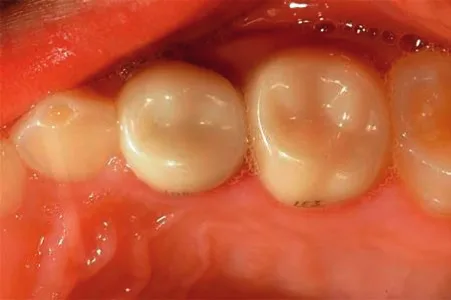

نسخه استخراجشده؛ ترجمه یا تأیید علمی انجام نشده است. وضعیت: captured
ثنایای شیری درگیر در ECC معمولاً تخریب گستردهای دارد. چهار گزینهی رایج:
استریپ کراون کامپوزیتی — بهترین زیبایی، ولی چسبنده است: هم به ایزولاسیون مطمئن نیاز دارد هم به بافت باقیماندهی کافی برای باند.
روکش فلزی با روکشکاری قدامی — بادوامتر، ولی لایهی همرنگ میتواند بشکند یا لبپر شود.
روکش زیرکونیا — زیبایی و دوام با هم، ولی گرانتر و سختگیرتر.
روکش فلزی ساده — بادوامترین و سادهترین، ولی از نظر زیبایی ضعیفترین.
هیچکدام مطلقاً بهتر نیست؛ هرکدام چیزی میدهد و چیزی میگیرد.

۱. بافت باقیمانده — تعیینکنندهترین عامل. استریپ کراون به سطح کافی برای باند نیاز دارد؛ اگر تاج بیش از حد تخریب شده، این گزینه از فهرست بیرون میرود.
۲. امکان ایزولاسیون — گزینههای چسبنده بدون کنترل رطوبت شکست میخورند؛ همان اصل آشنای ماژول.
۳. انتظار زیبایی خانواده — در ناحیهی قدامی یک معیار واقعی است، نه ترجیح لوکس.
۴. توان همکاری کودک — روشی که مراحل بیشتری دارد، در کودک بیقرار شانس اجرای درست کمتری دارد.
ویژگی خاص زیرکونیا: تراش بیشتری میخواهد، کریمپ نمیشود و باید غیرفعال بنشیند — یعنی نه قابل تنظیم است و نه با خونریزی لثه سازگار.